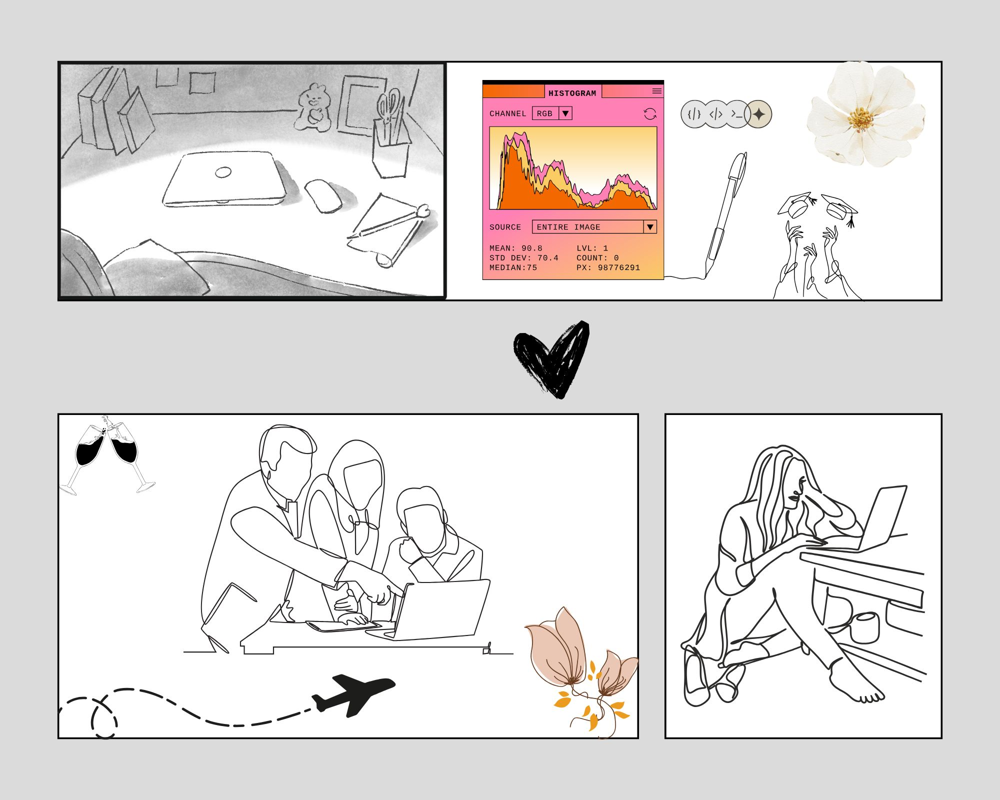

"From Pixels to Pipelines"
Babe is a women's health and community platform built mobile-first in React Native, combining private cycle tracking with encrypted local storage and an invite-only community network designed specifically around the health experiences of Black women and built with privacy, cultural context, and clinical utility at its core.
Projects, personas, and the thinking behind the code
I approach every project from two perspectives: Care centred and systems-oriented, with the data backing me up.
Every project below combines both: the care of community-centered design with the rigor of production-ready systems.
soft tech • playful builds • digital care ☁️
✨ Creative Tech →Systems, Pipelines & Impact
⚙️ Engineering projects →Aggregating 50K+ incarceration records across Pennsylvania with spatial analysis tools. Full-stack data infrastructure launching March 2025.
This project examined discrepancies in parole recommendation algorithms using anonymized open datasets. I investigated how race correlated with misconduct rates. See more ...
This project explores emotional and lyrical trends in North American Hot 100 chart-toppers (1950-1990). Using sentiment analysis, theme clustering, and frequency modeling, I examined how mainstream music reflects shifting cultural moods.
Key Frenzy is a reverse Pac-Man–style typing game that transforms keyboard input into a fast-paced survival challenge. Players type quickly and accurately to keep advancing ghosts at bay, turning familiar typing mechanics into an experience shaped by rhythm, focus, and pressure.